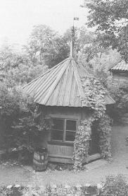
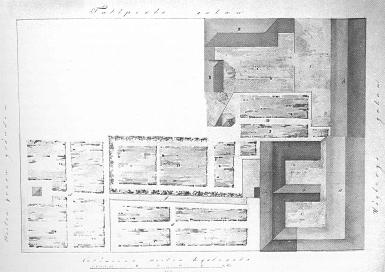

Södermalm i tid och rum. Stockholm
Kyrkoherdens lusthus Ur Sjutton Skansenhus berättar om Stockholm, Arne Biörnstad
Innanför bokhantverkshuset och kryddboden på Skansen finns en liten planterad gård med ett
sexsidigt lusthus, som trycker sin breda rygg mot planket vid tomtgränsen. Framväggen ut mot gården
fylls av en glasad dubbeldörr och de övriga väggarna har stora fönster. Huset är rödmålat med
grågröna snickerier och ter sig som en stor glaslykta med sitt toppiga brädtak krönt av en vindflöjel
med årtalet 1734.
|
Lusthuset kommer från kyrkoherdens boställe i Katarina församling, närmare bestämt det boställe som
byggdes upp igen efter den stora eldsvådan i Katarina församling den i maj 1723. Då brann kyrkan
och 448 gårdar förutom ett antal bodar och väderkvarnar. Till
de 448 gårdarna hörde också alla de kyrkliga boställena i kvarteret Sturen mindre vid
Högbergsgatan mellan Katarina västra kyrkogata och Östgötagatan. Eftersom inga försäkringar fanns tog det lång tid innan alla gårdarna blev uppbyggda på nytt. Att kyrkan snabbt skulle återställas var alla överens om. Det arbetet bedrevs med sådan kraft att kyrkan kunde tas i bruk redan på hösten 1724, men fullbordandet skulle komma att dröja ytterligare tjugo år. När nästan alla församlingens pengar gick till kyrkan blev det inte mycket över till nya hus för prästerskapet. Både kyrkoherdar och komministrar fick nöja sig med provisorier, särskilt komministrarna. Sedan 1696 hade kyrkoherden bott i ett stenhus i hörnet av Högbergsgatan och Östgötagatan. Till det hörde en stor tomt med allehanda uthus, en trädgård och ett lusthus. |
 |
{kind=link}
Stenhuset höjdes till två våningar, det byggdes nya uthus och 1725 kunde Schröder flytta in i 15 rum och kök. Där bodde han enligt 1730 års mantalslängd med hustru, två söner, fem döttrar, kokerska, kusk, dräng, huspiga och tjänsteflicka. Något nytt lusthus fick han inte före flyttningen till Kalmar. Och kyrkans övriga tomter i kvarteret stod helt öde.
Schröder efterträddes av en man med en ovanlig bana bakom sig. Johan Niclas Pouget var son till drottning Ulrika Eleonoras hovskomakare Johan Pouget. Som katolik kände sig Johan Pouget inte riktigt hemma i Stockholm och flyttade därför till Köpenhamn, där han hoppades möta större religionsfrihet. Sonen visade stor fallenhet för studier och placerades i en katolsk läroanstalt. Då den österrikiska envoyén i Stockholm passerade Köpenhamn blev han övertalad av legationsprästen att ta med sig den elvaårige Johan Niclas till Wien.
Följden blev att pojken i fyra år fick studera vid ett seminarium i Linz och därifrån sändes han till Rom för att fullborda sina studier. Han prästvigdes 1712 och promoverades till teologie och filosofie doktor. Året därpå blev han beordrad att tjänstgöra som Pastor vid församlingen i Utrecht. Eftersom han inte kunde holländska var han inte särskilt villig att åta sig det uppdraget, men måste lyda och lärde sig snabbt att predika på det nya språket. 1716 reste han till Köpenhamn för att träffa sin far. Katolikerna på platsen tyckte så mycket om hans predikningar att han blev kejserlig legationspredikant.
I Köpenhamn började han tvivla på att katolicismen var rätt kristendom och 1719 övergick han officiellt till lutherska kyrkan. Han gifte sig med en danska, Helena Maria Sessing, och fick med henne två barn, som emellertid dog som späda.
När han 1724 besökte sin syster, som var gift med en präst vid den tyska församlingen i Malmö, fick han en tjänst där, från vilken han kallades till komminister vid den franska lutherska församlingen i Stockholm. 1731, slutligen, fick han fullmakt som kyrkoherde i Katarina församling.
Det var således en utomordentligt beläst och berest man som blev herde i Katarina. Det är möjligt att de femton rummen i bostället tycktes honom onödigt många, när han flyttade in med hustru, svärmor, dräng och piga. Det vet vi inte mycket om, men vi vet att han i alla fall ville ha mer utrymme utomhus. I maj 1732 bad han om tillökning av sin trädgård söderut och i september »att Kyrkiones Föreståndare behagade ännu låta instänga till dess Trägårds större utwidgande på Södre ändan, ett stycke af den näst belägne Comministerns Tompt«.
Komministern fick ännu bo på annat håll eftersom den ifrågavarande tomten låg obebyggd efter branden 1723. Kyrkoföreståndarna svarade diplomatiskt »att hwad Dess Trägårds tillökning angår, lämnades under Hr Kyrkioherdens Disposition, att intaga som honom anständigast behagar«. Det behagade kyrkoherden att ta en bit av komministerns tomt. Det kan vi se på de senare tomtkartorna över området och där placerade han 1734 det lusthus som nu finns på Skansen. Det är osäkert om han själv hann njuta av trädgården och lusthuset, för den 12 juli 1735 dog han efter nästan ett års sjukdom.
1737 bad hans änka om ersättning för vad hennes man kostat på boställets tomt »med Lusthus byggande, Träns planterande, sampt sängars och gångars inrättande«. Kyrkans föreståndare funderade på saken och kom till resultat att hon borde få ersättning för den omkostnad som salig herr doktoren gjort, »på en sådan wilkorlig plats plaisirliga öfwerbyggnad och Träns planterande«. Alltså beviljades hon att under tre år i följd få 200 daler kopparmynt.
På så vis kom kyrkan att själv odelat äga fastigheten och vara fri att disponera marken som det var lämpligt, när »Cappelanernes huus och Gårdar komma att anläggas och byggas«. Sedan kyrkan köpt lusthuset flyttades det från sin ursprungliga plats längst nere i söder in på den inre delen av kyrkoherdens tomt framför bostället. Inte förrän 1771 kom kaplanshuset att uppföras, men det blev med sina tre våningar och flyglar också rejält tilltaget.
|
 1846 års generalplan över Katarina församlings prästboställen. Kyrkoherdens lusthus till höger och komministrarnas längst till vänster. |
På en senare plan från 1846 ser vi hur prästerskapets bostäder då tedde sig. Kyrkoherde Pougets
tillägg till trädgården finns fortfarande kvar, men hans lusthus ligger på den nya platsen.
Granntomten fylls av den stora byggnaden för komministrarna, som fått var sin trädgård anlagd på
resten av utrymmet. Utmed gränsen till kyrkoherdens trädgård går en gång ner till den bortersta
trädgården och mittför gången ligger ännu ett lusthus, fastän något mindre än kyrkoherdens.
1881 flyttade kyrkoherden Axel Landquist in i prästgården, som hade förändrats något sedan Pougets dagar och bara innehöll 8 rum förutom kök, bagarstuga och 2 rum på vinden. Son i huset var John Landquist. Han berättar i sin bok, Livet i Katarina, om sin barndom i huset och om hur trädgårdarna då såg ut. |
{kind=link}
Mellan komministrarnas och kyrkoherdens domäner gick höga plank med litet snedställda täckbrädor, som familjernas pojkar brukade springa på. Trädgårdsdelen närmast kyrkoherdens hus hade gräsmattor, blomrabatter och några stora lönnar, kastanjer och almar. Delen i söder och öster var frukt- och köksträdgård. Ett högt päronträd hade frukt lämplig för syltning. Päronen ålades John plocka ner om hösten. Dessutom fanns bigarråer och körsbär, som han förmodligen plockade av egen drift.
»Allehanda lekar förekom i och omkring lusthuset. Ibland iordningställdes lusthuset för söndagsbruk. Familjen åt frukost eller middag där en blå pingstdag eller några sommarsöndagar. Dessa söndagsstundervar klara, stilla och helgaktiga. Man var rentvättad, bar söndagskläder, körsbärsträd och päronträd blommade. Sädesärlan trippade på sandgången.«
1913 försvann en del av härligheten. Större delen av trädgårdarna såldes och pengarna användes till att bygga ett församlingshus i den nya Sofia församling.
Höga hus växte upp på platsen och det lilla som fanns kvar av trädgård kom att ligga i skugga. 1931 kom den stora förändringen. Efter 25 års mer eller mindre oavbrutet diskuterande och utredande revs både kyrkoherdeboställe och komministerhus för att ge plats åt ett nytt församlingshus. Lusthuset var det enda som blev kvar och fick då flytta till Skansen.